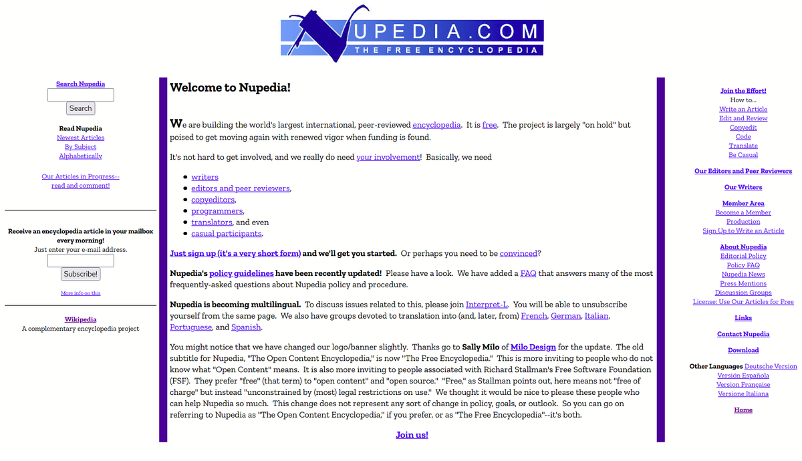

2001
Wikipedia se lanzó como un sub-proyecto de Nupedia, una enciclopedia en línea tradicional. Para desarrollar su plataforma, se utiliza un tipo de Wikipedia de la aplicación web denominada "wiki", que permite a cualquier usuario agregar contenido.
Nupedia fue una enciclopedia en línea cuyos artículos fueron escritos por expertos y registrados bajo licencia de contenido libre. Fue fundada por Jimmy Wales y suscrita por Bomis, con Larry Sanger como redactor jefe. Nupedia duró desde marzo de 2000 hasta septiembre de 2003, y es más comúnmente conocida ahora como la antecesora de Wikipedia.
